Marketing & communications
Campaign planning, social strategy, content systems, copywriting, brand storytelling, publishing and audience growth.
Marketing & communications · Partnerships · Projects · Operations
I'm Eya Amamria; an MBA graduate who turns objectives into campaigns, outreach and organised delivery. My experience spans marketing communications, partnerships, client support, project operations, data quality and research across international teams.
Open to marketing & communications, partnerships / BD, sales and account support, project and operations roles.
How I can contribute
My advantage is range with a clear centre: helping teams communicate well, build useful relationships and turn plans into organised action.
Campaign planning, social strategy, content systems, copywriting, brand storytelling, publishing and audience growth.
Audience research, partner decks, outreach structures, stakeholder follow-up, client communication and account support.
Timelines, event delivery, vendor coordination, reporting, workflow design and dependable cross-functional follow-through.
CRM data quality, dashboards, business analysis, research synthesis and evidence that supports better decisions.
01 / Selected work
Selected work across campaigns, partnerships, international programmes, events, leadership, client support, operations and high-accuracy data.
JM International · Brussels
During an Erasmus+ traineeship at JMI, built social and collaboration systems for IMX 2026, created campaign content across posts, stories, email and blogs, and produced partner decks and event assets for IMX and Ngeke. Coordinated publishing, partner updates and on-site communication across three international initiatives.
Tunisia88 Alumni · Tunisia
Co-founded the alumni network with four former club leaders, then served as Vice President and led the Reports and Information & Support squads. Coordinated 50+ members, delivered leadership and integration training, and supported events, tours, reporting and stakeholder communication.
Orient-US · Tunisia
Coordinated two national events, vendor follow-up and reporting; created targeted digital content; and built 50+ reusable outreach templates to make partner communication faster and more consistent.
Transcom Worldwide · Tunisia
Managed 50+ daily B2C and B2B client interactions across fast-paced accounts, resolving issues, documenting follow-up and protecting service quality and customer satisfaction.
Veeva Network · Remote, US-based
Worked remotely for a US-based organisation, verifying and standardising multi-market healthcare-professional and organisation records in Veeva Network while supporting reliable CRM workflows and reporting readiness.
FormaFast Consulting · Tunisia
Supported the Financiana project by translating 20+ financial reports from French to English, contributed to data analysis for Tunisian banking-sector reports, and managed 100+ CVs and company profiles in an applicant-tracking system.
Selected proof of work
Strategy, content and campaign evidence—labelled to show exactly what I created, originated or helped deliver.
Case study 01 · Imagine Music Experience
I developed the 2026 social and collaboration strategy for IMX, turning one international programme into a repeatable system that national teams could activate consistently.
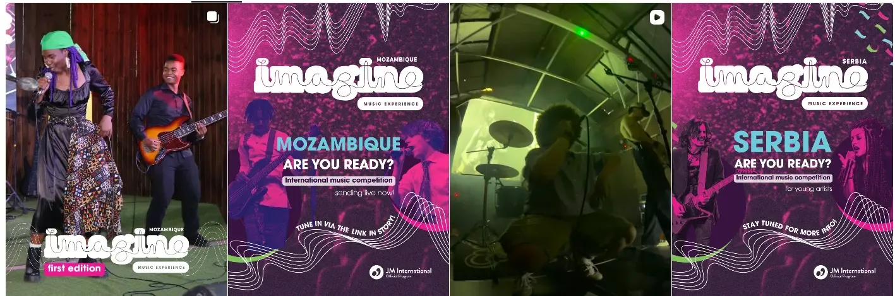
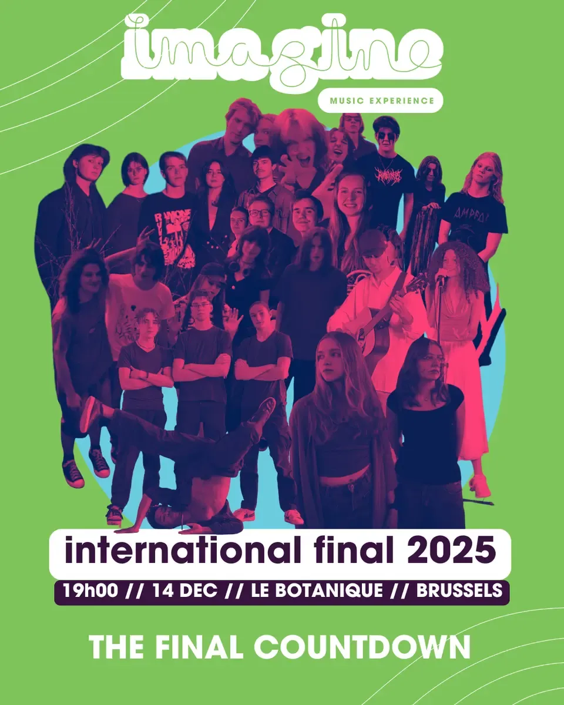
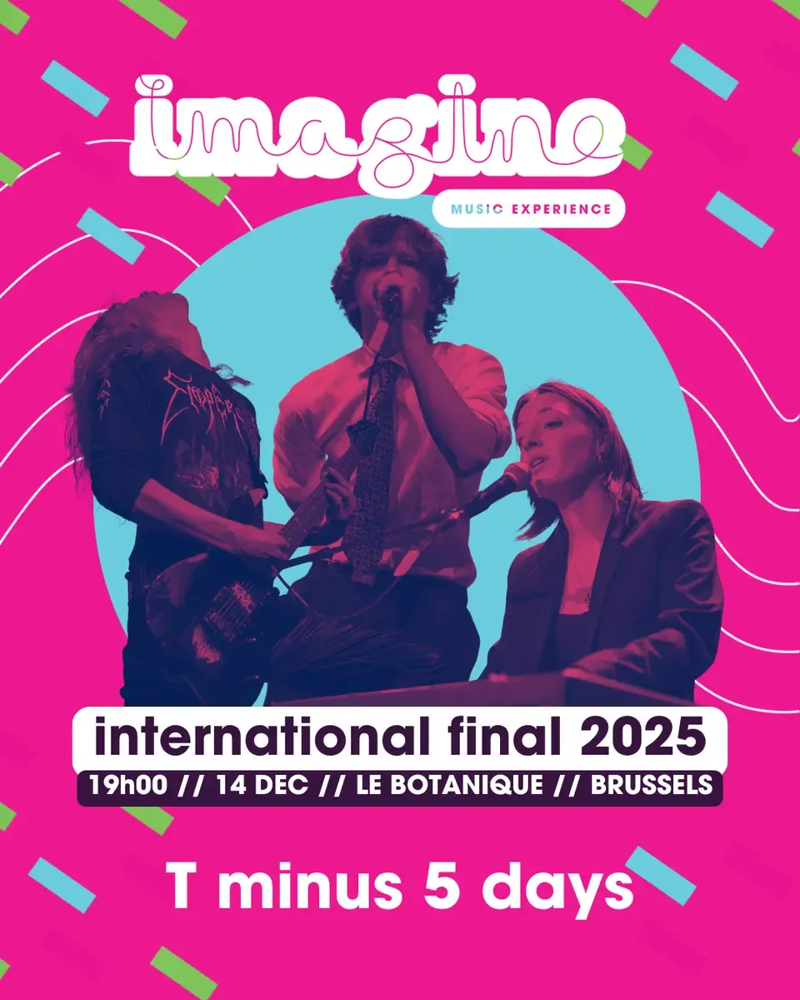
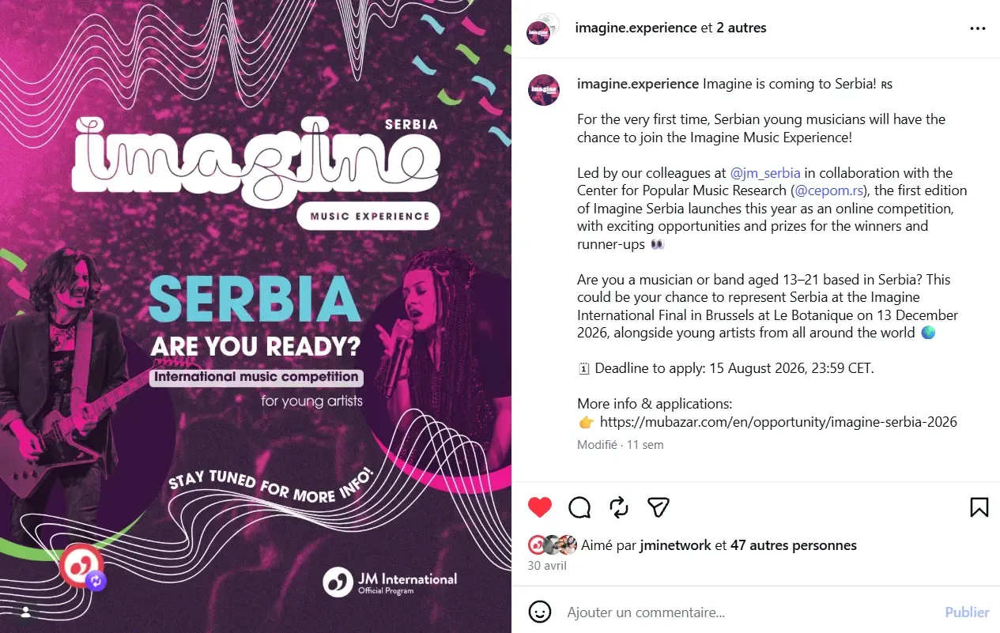
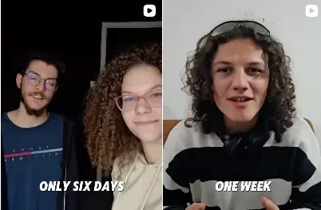
JMI · Partner communication & outreach
Alongside social strategy, I created partner-facing decks for Imagine and Mubazar, then helped take the IMX campaign offline by distributing flyers with a coworker across Brussels.
Outreach focused on the audience in context: art schools, universities, cafés and event venues.
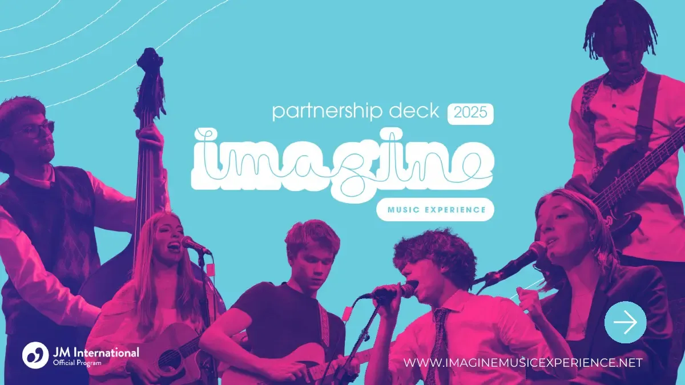
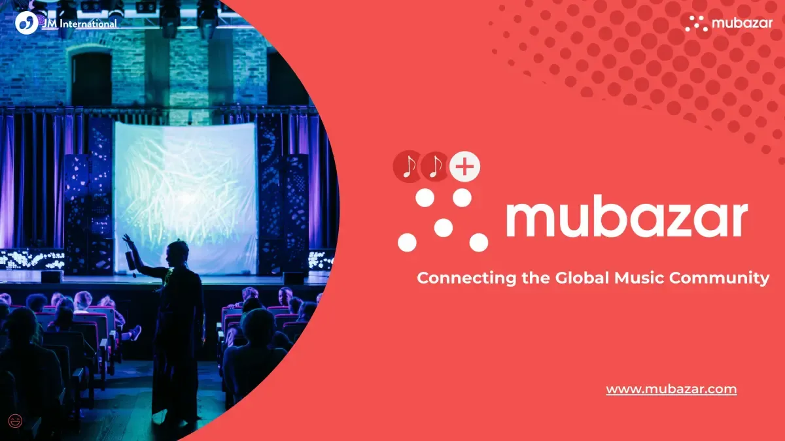
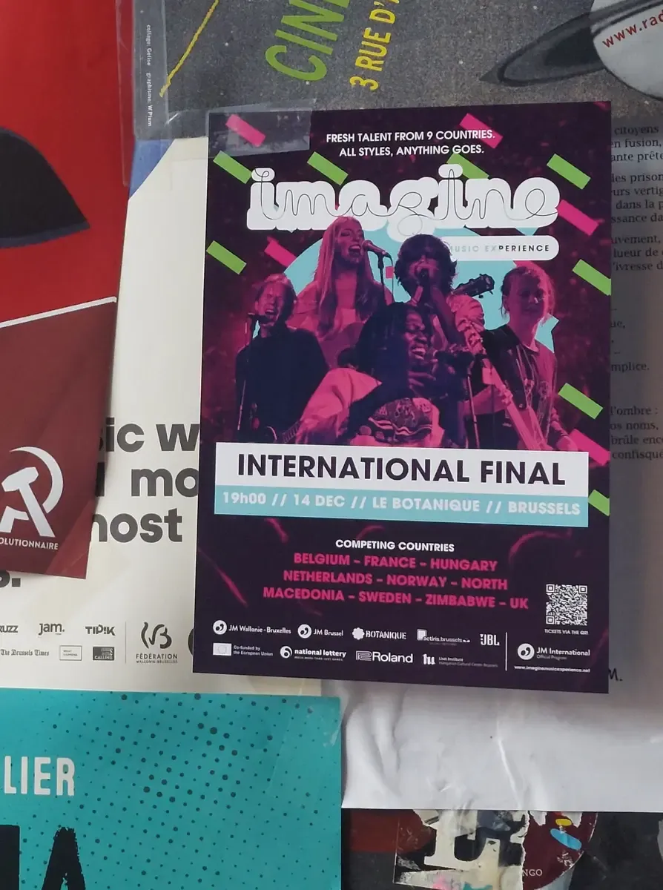
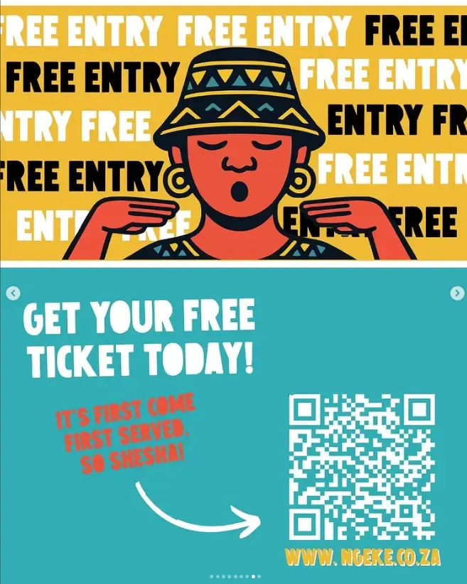
Campaign contribution
Contributed to festival marketing, social content and promotional materials for the anti-corruption cultural campaign.
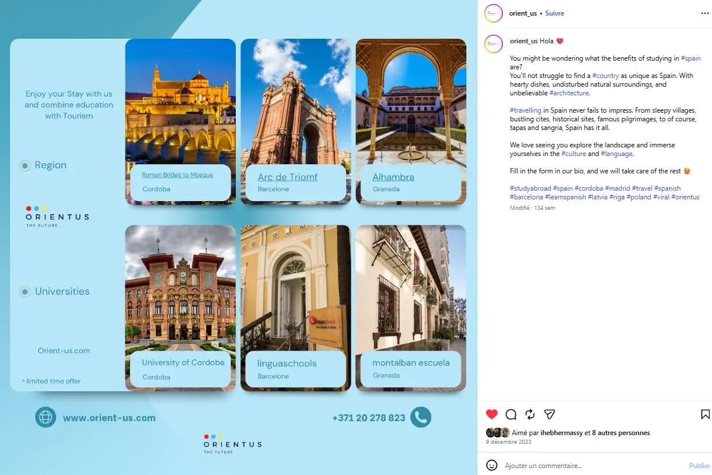
Created by me
A study-abroad campaign post combining education, tourism and a clear enquiry call to action within the brand system.
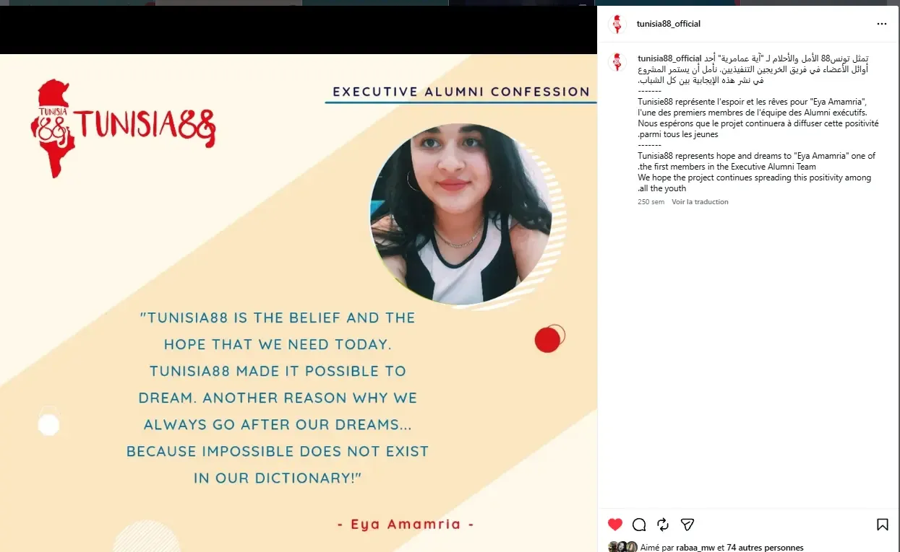
Official recognition
An official Tunisia88 feature naming me as one of the first Executive Alumni team members. I co-founded the Alumni initiative with four fellow former club leaders; it has continued to grow beyond our time in leadership.
02 / Research & publications
My research sits where strategy, digital transformation and the cultural and creative industries meet.
Master's research · Global MBA
A mixed-methods study of 96 Tunisian CCI SMEs and five company representatives. It finds that managerial orientation, operational practices and leadership-led experimentation shape digital maturity, while higher maturity is associated with stronger efficiency, audience reach and creative output. Bureaucratic and infrastructure constraints continue to moderate progress.
ICAEB 2025 · Paris
Co-authored with Kaspars Steinbergs and Renāte Cāne. Based on interviews with seven Latvian CCI micro-enterprises, the study finds that digitalisation expands market reach and revenue opportunities, while deeper change in internal processes remains constrained by fragmented strategy, finance and skills.
Creativity & Culture 2025 · Vilnius · released May 2026
Co-authored with Dr Kaspars Šteinbergs and included in the Vilnius programme under Technological Mediation of Art and Culture. The abstract was released in May 2026, after completion of the MBA and its underlying research.
ICAEB 2026 · Florence · 23—25 August 2026
Co-authored with Dr Kaspars Šteinbergs. The full paper has been accepted for publication and oral presentation; the remaining work is final revision and formatting to the proceedings template, followed by the conference presentation in Florence.
03 / International perspective
My path is deliberately cross-functional: marketing campaigns, partnership outreach, project delivery, client support, operations, data and research. I can see the commercial goal, shape the message, coordinate the moving parts and follow through on the details teams depend on. International work has made me adaptable, culturally aware and comfortable learning new sectors quickly.
Marketing strategy, content, partnership outreach, stakeholder communication, project coordination, reporting
Arabic, English, French · learning Italian and Dutch
Marketing & communications, partnerships / BD, sales and account support, projects, programmes and operations
Working toolbox
Grouped by practical use, with quick-ramp platforms kept separate for an accurate picture of my current experience.
Data, CRM & systems
Projects & productivity
Content, publishing & campaigns
Quick ramp-up
Have a project, role or research conversation in mind?
I'm open to marketing and communications, partnerships and business development, sales and account support, project or programme coordination, operations and research-led roles. Based in Riga and open to relocate across Europe for the right opportunity.